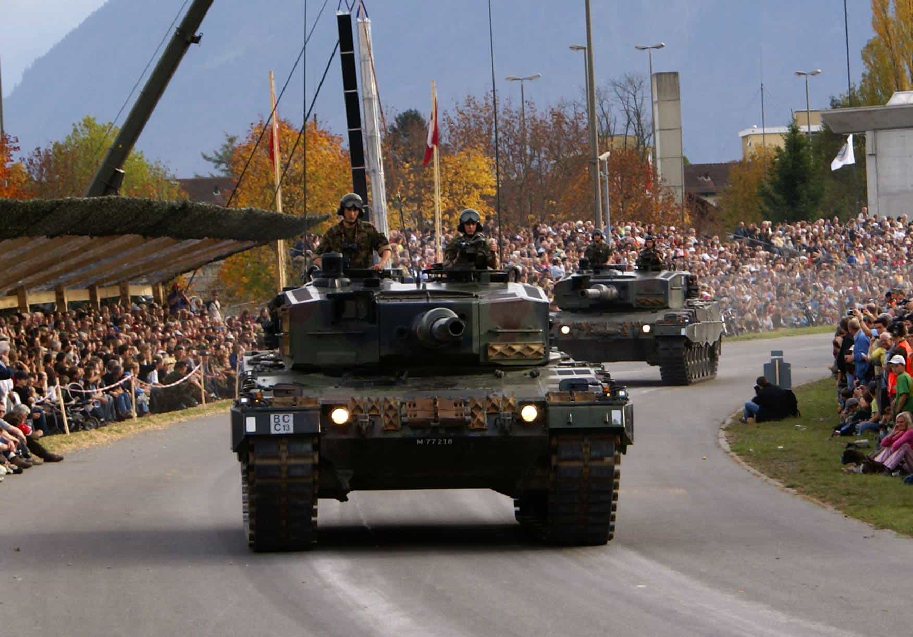
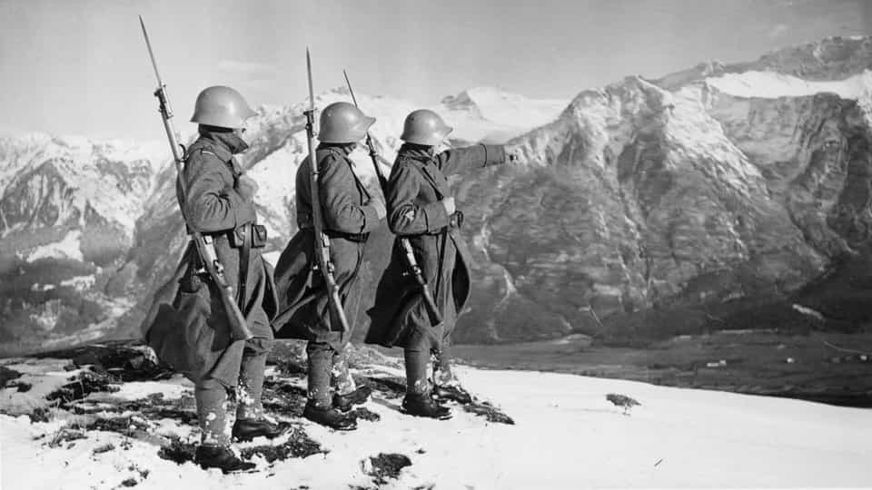

An ageing millennial, recently red pilled and on a mission to restore common sense and promote traditional values. Fairly well travelled and bilingual with an interest in history and currently living in the UK.


Switzerland is in a unique position in Europe. It is landlocked and borders three potential big players in an all-out war. Besides its neutrality, which would by no means guarantee protection from an invasion (e.g., Netherlands in WW2), there are many practical reasons why this small country can offer shelter and safety from an armed conflict even if the country were to be invaded.

The Swiss army is made up of 21,000 active personnel and another 150,000 in reserve. National service is mandatory for every able-bodied male citizen, making just about every man in the country having a basic level of combat training and the ability to use a firearm. At age 35 you become part of the reserve and the government issued assault rifle is given to you. The idea behind your assault rifle being so readily accessible is for the scenario where in the event of war each civilian becomes a soldier almost immediately, making mobilisation very fast and efficient.
The Stgw 57. Although no longer in production or used by the army this assault rifle is widely owned privately.
Gun ownership is extremely high. Unlike most other countries in Europe, the Swiss government encourages an armed populous and requires active personnel to store their assault rifle at home and, up until 2008, even store live ammunition. Over 600,000 citizens belong to shooting clubs, including children.
The population of Switzerland stands at around 8.2 million, of this 2.7 million are male aged between 15 and 64. With 3.4 million guns this makes for an impressive force for an invading army to face.
However, with globalism and the cancer that it is spreading to all corners of the planet, gun rights are being eroded and limitations are slowly being implemented. In just 20 years, the militia has shrunk from 600,000 to less than 200,000. Every time there is a shooting, the subject resurfaces and there is a knee-jerk reaction of some who want a total gun ban. With guns so deep rooted into Swiss culture, every referendum so far has failed, but small changes have been made. This being said, crime is very low and the high number of guns does not correlate with the number of homicides, as the left loves to claim.
Natural borders
The entire southern border is made up of the Alpine mountain range, with most of the highest peaks concentrated in this region and forming the natural divide between Switzerland and Italy. An invading army would simply not be able to enter through this formidable obstacle with heavily armed defenders on every cliff edge.
Yes, Napoleon marched his Grand armee up and through the St Bernard pass but there was no opposition to hamper his progress.
The Northwestern border is also protected by mountains, much smaller but still a logistical headache for an invader. Along the North and East, you have the Rhine river and lake Constance, so this leaves very few flat entry points. The only realistic routes are in and around Geneva and Basal, but even these are quite narrow and would bottleneck the invaders. Monumental efforts would be needed to either navigate through mountain passes or cross large rivers and lakes.
Disguised bunkers like this are dotted all across the mountains
Eventually, a well-equipped and determined army would probably breach the border in combination of full frontal attacks in the urban areas mentioned above and amphibious assaults across the Rhine. This would only be the start however as Swiss militia and regulars retreat into their natural defenses, trying to flush them out will be nearly impossible short of dropping nuclear weapons.
This would eventually descend into guerrilla warfare which could last for years. It is unlikely that the occupiers could be pushed out and defeated without some kind of foreign intervention depending on the belligerents involved. For example, Italy and Austria would not stand a chance of even invading in the first place due to the Alps. France and Germany would also have a hard time but would probably be able to invade and hold at least part of the country.
Individual nations invading is very unlikely, though the EU could turn tyrannical and mount an invasion. Russia would be a distant second and I don’t see any other foreign powers capable of reaching Switzerland to invade.
There are enough nuclear fallout bunkers to shelter the entire population. Regulations since 1963 made it compulsory for every new building to have such shelters
If Switzerland is left alone and the war takes place just outside its borders but involves nuclear weapons, the large mountains will offer good protection from such strikes. Large cities are the primary targets of nuclear attacks, so if we look at which cities are the closest to Switzerland, this can help to work out where the safest place would be.
If we assume the worst case scenario and a 50 megaton warhead is dropped, Paris, Berlin, and London are all far enough away to escape the blast and even the thermal radiation. Therefore the safest places are the towns and villages directly behind mountains deep within the Alpine regions away from the borders, mainly the South and Central parts.

Entering Switzerland now is very easy since it is a part of Schengen and one can literally walk across the border with seldom checks at crossing points that are actually manned. For those who think all-out war is just not going to happen, don’t be surprised when it does, especially with the polarisation we’re currently seeing. At best there will be armed insurrections across Europe, which will be mostly isolated but numerous and could easily escalate. Worst case is of nuclear bombs leveling the entire continent. Either way I predict most survivors will find themselves in Switzerland.
Read Next: 10 Reasons Why Switzerland May Be The Best Country In The World